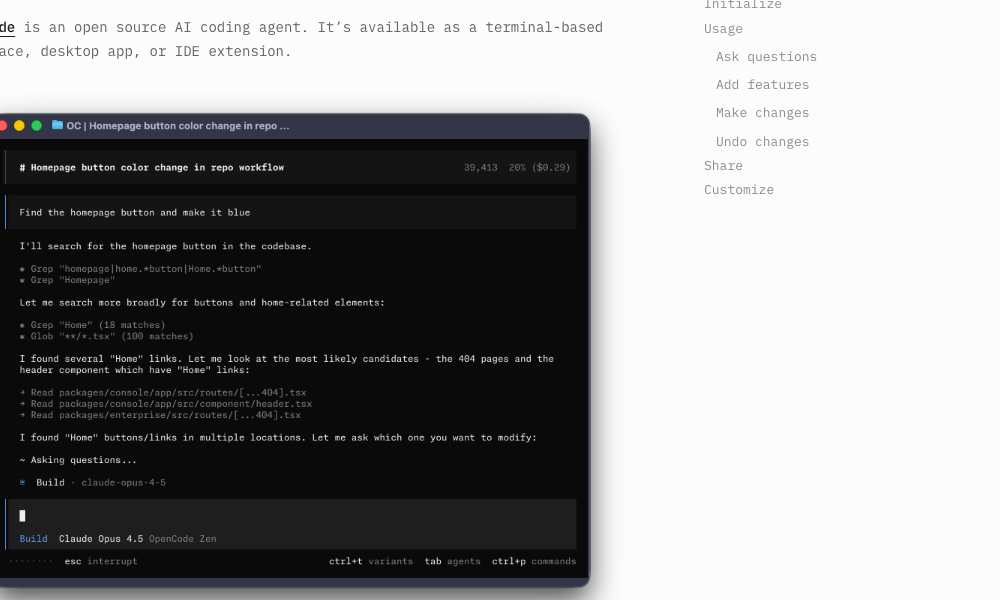
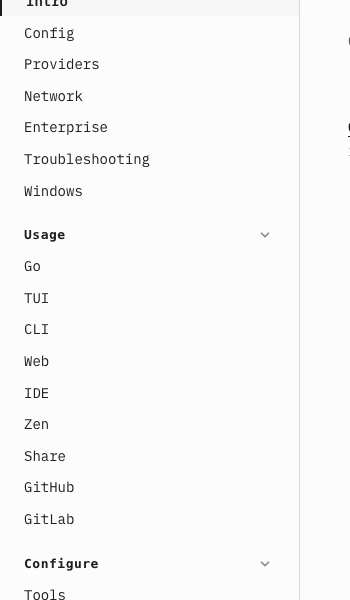
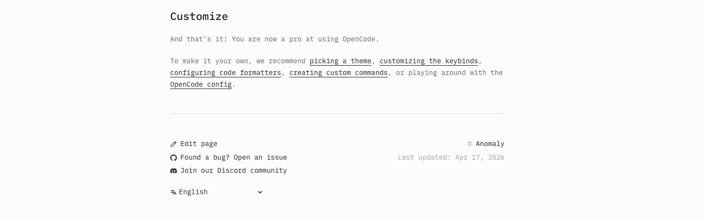

OpenCode provides a built-in web UI that lets you interact with the agent through a browser. This is useful for remote development, shared environments, or when you prefer a web-based workflow over the desktop client.
Getting Started
To launch the OpenCode web server, run the following command in your terminal:
opencode webBy default, the server starts on localhost:3000. Open your browser and navigate to http://localhost:3000 to access the web interface.
The web UI provides the same core functionality as the desktop client, including chat sessions, file editing, and terminal access.
Configuration
The web server supports several configuration options to customise how it runs:

Port
Specify a custom port for the web server:
opencode web --port 8080This starts the server on port 8080 instead of the default 3000.
Hostname
Bind the server to a specific hostname or IP address:
opencode web --host 0.0.0.0Binding to 0.0.0.0 makes the server accessible from other machines on the network, which is useful for remote development setups.
mDNS
OpenCode supports mDNS (multicast DNS) broadcasting, which allows the server to be discovered on the local network by its hostname. This is enabled by default when running the web server.
When mDNS is active, you can access the server using a local hostname like http://your-machine.local:3000 from other devices on the same network.
CORS
Cross-Origin Resource Sharing (CORS) is configured to allow the web UI to communicate with the server. If you are running the server on a different origin than the client, ensure CORS is properly configured to allow requests from your client's origin.
When using --host 0.0.0.0, be mindful of network security. Only expose the server to trusted networks, especially when authentication is not enabled.
Authentication
To protect your OpenCode web server with a password, set the OPENCODE_SERVER_PASSWORD environment variable before starting the server:
export OPENCODE_SERVER_PASSWORD="your-secure-password"
opencode webOnce set, anyone accessing the web UI will be prompted to enter the password before they can interact with the agent.
Always use a strong password when exposing the web server to a network. Never commit the password to version control or share it in plain text.
Using the Web Interface
The OpenCode web UI provides a full-featured development environment accessible from your browser.
Sessions
Each conversation with the agent is organised into a session. You can:
- Create new sessions to start fresh conversations on different topics
- Switch between sessions using the session sidebar to continue previous work
- Review session history to see the full context of past interactions

Server Status
The web interface displays the current server status, including:
- Connection state (connected/disconnected)
- Server version information
- Active session count
Attaching Terminal
The web UI includes an integrated terminal that you can attach to your session. This allows you to:
- Run shell commands directly from the browser
- View command output in real-time
- Interact with the agent while executing commands
To attach a terminal, look for the terminal panel in the web interface and click to open it. The terminal runs in the same working directory as your OpenCode project.

Config File
OpenCode uses a JSON configuration file to define server settings. The config file is typically located at .opencode/config.json in your project root.
Here is an example configuration:
{
"server": {
"port": 3000,
"host": "0.0.0.0",
"mdns": true,
"cors": {
"allowed_origins": ["http://localhost:3000"]
}
},
"auth": {
"password_env": "OPENCODE_SERVER_PASSWORD"
}
}The configuration supports the following fields:
server.port- The port number the web server listens onserver.host- The hostname or IP address to bind toserver.mdns- Enable or disable mDNS broadcastingserver.cors.allowed_origins- List of allowed origins for CORSauth.password_env- The environment variable name for the authentication password
Command-line arguments take precedence over config file values. Use the config file for persistent settings and CLI flags for temporary overrides.